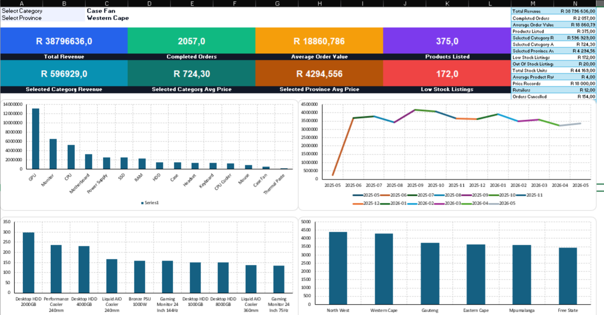
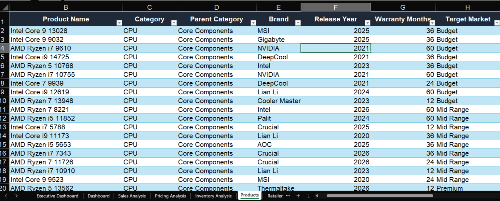
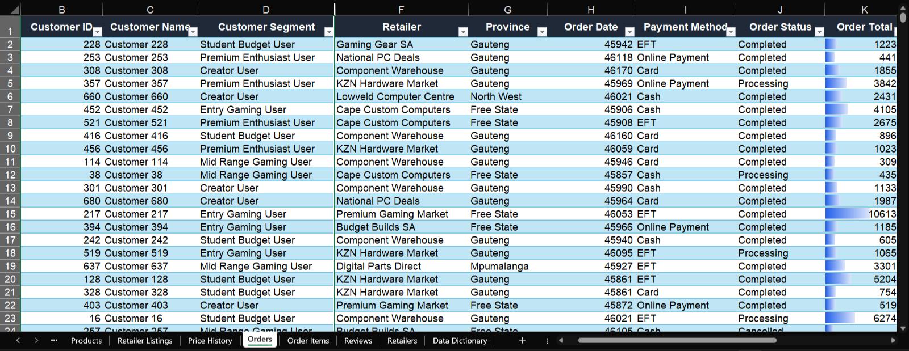

Database design
Created a relational SQL Server structure for products, categories, retailers, suppliers, customers, orders, reviews, listings, and price history.
SQL Server and Excel business intelligence project focused on PC hardware pricing, sales, inventory, retailers, and customer behaviour.
A complete market intelligence solution that turns retail hardware data into clear insight about prices, demand, stock risk, customer segments, and retailer performance.

The PC hardware market is highly competitive, with prices changing frequently across retailers, provinces, and product categories. Consumers often struggle to determine whether a product is genuinely well priced because the same component may be sold at different prices depending on location, supplier relationships, stock availability, and retailer strategy.
The objective was to build a complete market intelligence solution capable of tracking product pricing, sales activity, inventory levels, retailer performance, customer purchasing behaviour, and historical price movements.
The project began with the design of a relational SQL Server database. Multiple tables were created to represent products, categories, brands, retailers, suppliers, inventory, orders, customers, reviews, promotions, and historical pricing data.
Once the database structure was complete, realistic market data was generated to simulate the South African PC hardware industry. The dataset included pricing variations between retailers, inventory fluctuations, customer transactions, sales activity, product reviews, and historical pricing trends.
Using SQL Server, a series of analytical queries were developed to answer important business questions. These analyses examined retailer performance, product demand, inventory risk, customer spending patterns, category profitability, pricing differences between regions, sales trends over time, and customer sentiment through product reviews.
The final stage focused on reporting and visualisation within Excel. Interactive dashboards were developed to present key performance indicators, revenue trends, retailer comparisons, pricing intelligence, inventory monitoring, and customer analytics.
PC part prices vary across retailers, provinces, brands, categories, and stock levels. This makes it difficult for buyers and business teams to understand whether a product is priced fairly or whether a price difference is caused by demand, availability, retailer strategy, or location.
This project solves that problem by creating a structured data model and dashboards that reveal pricing patterns, sales performance, inventory risk, customer behaviour, and retailer performance in one connected reporting workflow.
Created a relational SQL Server structure for products, categories, retailers, suppliers, customers, orders, reviews, listings, and price history.
Built realistic market records to simulate retailer listings, provincial differences, product stock movement, and customer transactions.
Used joins, aggregations, ranking, and filtering to answer business questions across pricing, sales, inventory, and customers.
Designed dashboards that combine executive metrics, charts, slicer style filtering, and operational tables for decision support.


This query demonstrates joins, aggregation, ranking, and business focused analysis. It shows how raw transactional data can be transformed into category level insight for decision makers.






GPU and monitor categories generated the strongest revenue.
Pricing varied noticeably between retailers and provinces.
Inventory risk appeared in low stock and out of stock listings.
Customer segment analysis helped reveal different purchasing behaviours.
Retailer benchmarking made it easier to compare revenue, stock, and pricing performance.